Walk & Bike/Micromobility Summary
Trips in Region

Walking and Bike/Micromobility Trips
survey_year mode_class_5 count prop prop_moe est est_moe
<char> <ord> <int> <num> <num> <num> <num>
1: 2017 Walk 6750 0.10451918 0.008596931 1712548 144688.50
2: 2019 Walk 9736 0.10648792 0.007605951 1781424 130463.48
3: 2021 Walk 1816 0.15743899 0.008302067 2020069 106976.73
4: 2023 Walk 6923 0.10969511 0.007114693 1768924 119213.61
5: 2025 Walk 3520 0.09695564 0.005753051 1657980 99032.14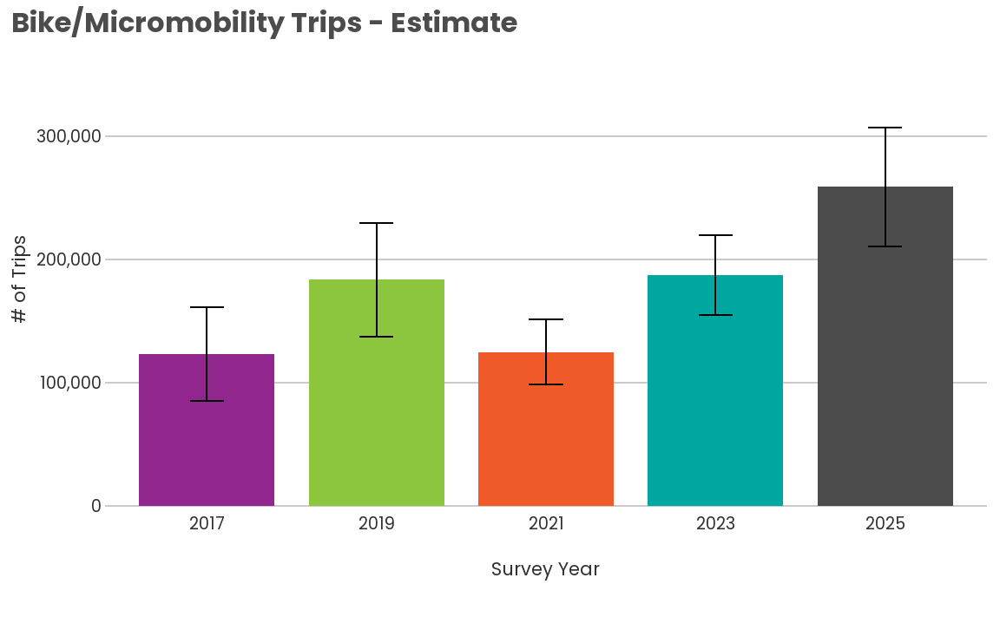
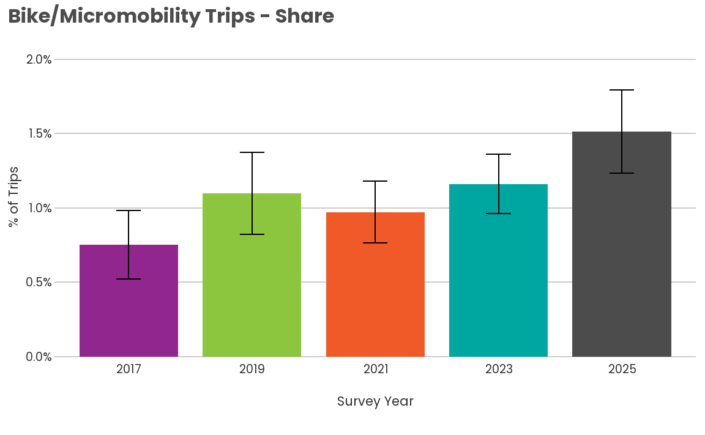
survey_year mode_class_5 count prop prop_moe est
<char> <ord> <int> <num> <num> <num>
1: 2017 Bike/Micromobility 820 0.007510197 0.002308935 123054.7
2: 2019 Bike/Micromobility 1160 0.010972633 0.002753399 183559.9
3: 2021 Bike/Micromobility 137 0.009726335 0.002074103 124796.7
4: 2023 Bike/Micromobility 917 0.011607864 0.001996720 187186.3
5: 2025 Bike/Micromobility 477 0.015137193 0.002802514 258852.0
est_moe
<num>
1: 37885.81
2: 46186.38
3: 26594.24
4: 32216.40
5: 48192.10Trips by Household Income

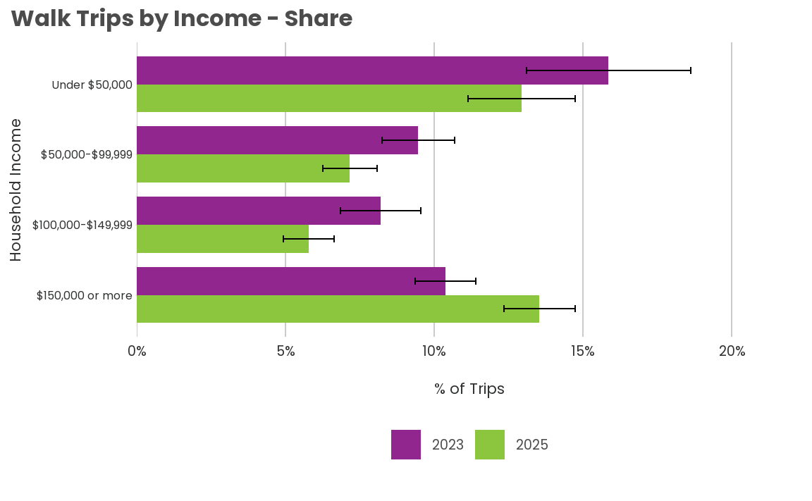
survey_year hhincome_detailed_combined mode_class_5 count prop
<char> <fctr> <ord> <int> <num>
1: 2023 Under $50,000 Walk 1601 0.15857591
2: 2023 $50,000-$99,999 Walk 1629 0.09469283
3: 2023 $100,000-$149,999 Walk 1083 0.08209031
4: 2023 $150,000 or more Walk 1951 0.10382684
5: 2025 Under $50,000 Walk 541 0.12939372
6: 2025 $50,000-$99,999 Walk 764 0.07170949
7: 2025 $100,000-$149,999 Walk 574 0.05779451
8: 2025 $150,000 or more Walk 1423 0.13536669
prop_moe est est_moe
<num> <num> <num>
1: 0.027609982 430604.7 83346.79
2: 0.012249891 364953.0 48126.76
3: 0.013531546 233960.4 39387.52
4: 0.010256278 533616.3 53178.23
5: 0.018089102 310385.5 45725.19
6: 0.009045799 262212.2 32573.45
7: 0.008489008 171877.6 24832.88
8: 0.011980191 786062.1 72885.83
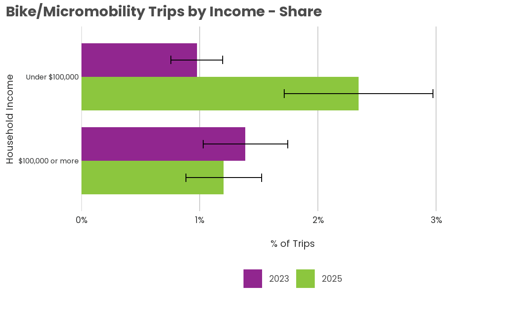
survey_year hhincome_bike mode_class_5 count prop
<char> <fctr> <ord> <int> <num>
1: 2023 Under $100,000 Bike/Micromobility 356 0.009766856
2: 2023 $100,000 or more Bike/Micromobility 494 0.013875298
3: 2025 Under $100,000 Bike/Micromobility 167 0.023430626
4: 2025 $100,000 or more Bike/Micromobility 291 0.012035401
prop_moe est est_moe
<num> <num> <num>
1: 0.002201394 64163.56 14356.33
2: 0.003567555 110856.96 28629.45
3: 0.006292576 141880.83 38583.97
4: 0.003193635 105681.10 28162.89Trips by Race/Ethnicity

survey_year race_binary mode_class_5 count prop prop_moe
<char> <char> <ord> <int> <num> <num>
1: 2023 People of Color Walk 1933 0.12063611 0.012315691
2: 2023 White Walk 4209 0.11976271 0.011756728
3: 2025 People of Color Walk 966 0.09828485 0.010989975
4: 2025 White Walk 2101 0.09900517 0.007615612
est est_moe
<num> <num>
1: 569082.7 58406.44
2: 932089.0 97845.23
3: 526316.9 59748.32
4: 742970.1 57528.80
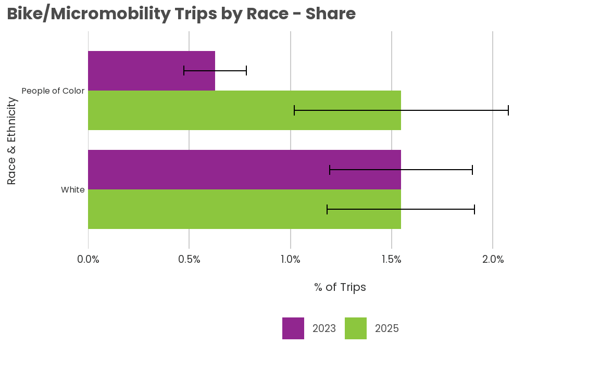
survey_year race_binary mode_class_5 count prop prop_moe
<char> <char> <ord> <int> <num> <num>
1: 2023 People of Color Bike/Micromobility 206 0.006292409 0.001539631
2: 2023 White Bike/Micromobility 593 0.015469860 0.003517262
3: 2025 People of Color Bike/Micromobility 133 0.015471451 0.005277343
4: 2025 White Bike/Micromobility 279 0.015454198 0.003645484
est est_moe
<num> <num>
1: 29683.50 7162.158
2: 120398.80 27479.271
3: 82849.86 28439.829
4: 115973.82 27505.078Trips by Age

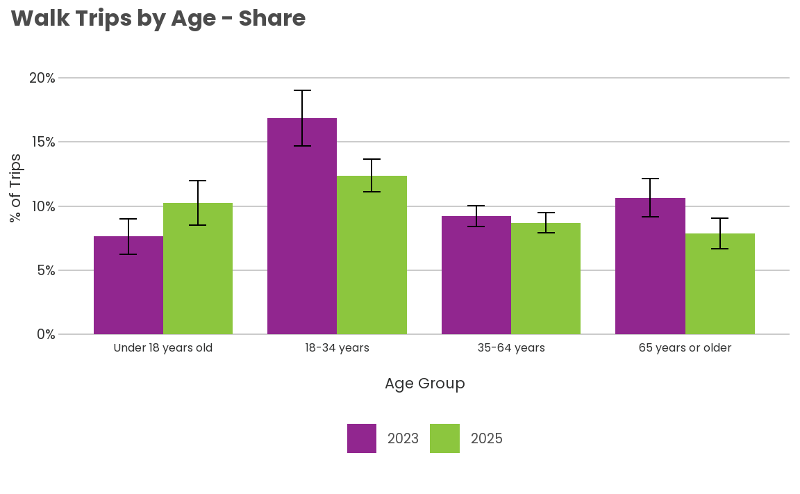
survey_year age_condensed mode_class_5 count prop prop_moe
<char> <fctr> <ord> <int> <num> <num>
1: 2023 Under 18 years old Walk 377 0.07628732 0.013847526
2: 2023 18-34 years Walk 2747 0.16870192 0.021699928
3: 2023 35-64 years Walk 2853 0.09223369 0.008194551
4: 2023 65 years or older Walk 946 0.10654295 0.015022386
5: 2025 Under 18 years old Walk 231 0.10242708 0.017184942
6: 2025 18-34 years Walk 1222 0.12388927 0.012578542
7: 2025 35-64 years Walk 1599 0.08696490 0.007945958
8: 2025 65 years or older Walk 468 0.07860713 0.011714861
est est_moe
<num> <num>
1: 183105.3 33917.78
2: 625370.5 89181.38
3: 689497.7 61716.19
4: 270950.1 39109.92
5: 309344.7 54534.27
6: 483438.5 49591.90
7: 677674.2 62539.80
8: 187522.6 28008.18
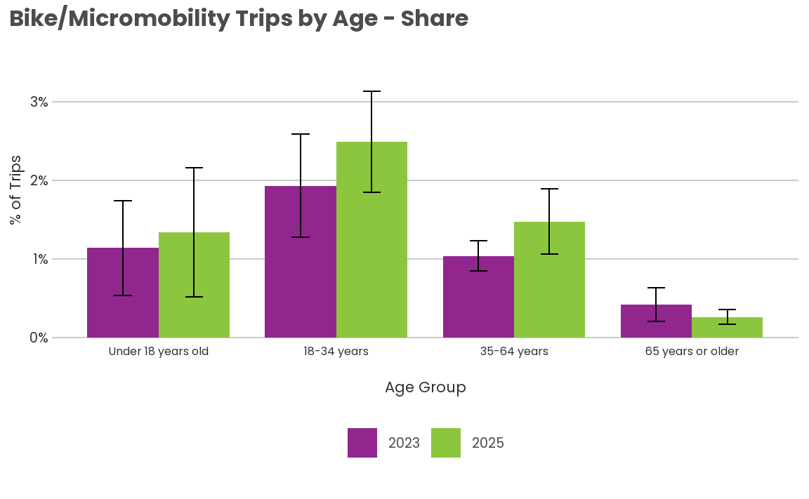
survey_year age_condensed mode_class_5 count prop
<char> <fctr> <ord> <int> <num>
1: 2023 Under 18 years old Bike/Micromobility 57 0.011403713
2: 2023 18-34 years Bike/Micromobility 380 0.019309526
3: 2023 35-64 years Bike/Micromobility 422 0.010390234
4: 2023 65 years or older Bike/Micromobility 58 0.004153496
5: 2025 Under 18 years old Bike/Micromobility 19 0.013423763
6: 2025 18-34 years Bike/Micromobility 169 0.024904496
7: 2025 35-64 years Bike/Micromobility 249 0.014750067
8: 2025 65 years or older Bike/Micromobility 40 0.002594134
prop_moe est est_moe
<num> <num> <num>
1: 0.006034702 27371.263 14546.305
2: 0.006583676 71579.555 24554.869
3: 0.001888130 77672.727 13978.333
4: 0.002154272 10562.786 5465.018
5: 0.008211161 40541.721 25023.853
6: 0.006445368 97181.870 25319.016
7: 0.004147404 114939.928 32531.675
8: 0.000933093 6188.482 2202.349Trips by Gender

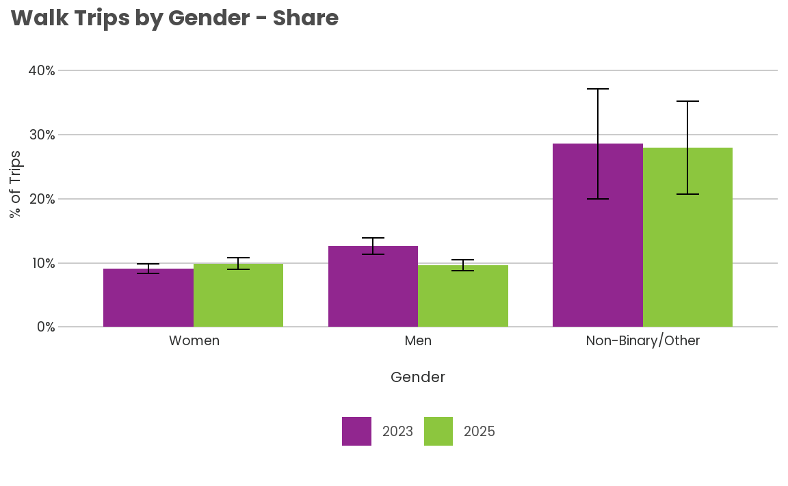
survey_year gender_group mode_class_5 count prop prop_moe
<char> <fctr> <ord> <int> <num> <num>
1: 2023 Women Walk 3239 0.09112559 0.007493236
2: 2023 Men Walk 3143 0.12627770 0.012934447
3: 2023 Non-Binary/Other Walk 206 0.28614534 0.085925489
4: 2025 Women Walk 1628 0.09891508 0.008918389
5: 2025 Men Walk 1612 0.09616697 0.008214995
6: 2025 Non-Binary/Other Walk 106 0.27965289 0.072647221
est est_moe
<num> <num>
1: 720601.45 58988.23
2: 878705.98 96564.62
3: 53886.03 19873.41
4: 828350.27 76628.15
5: 708554.70 60858.84
6: 52905.85 15644.08
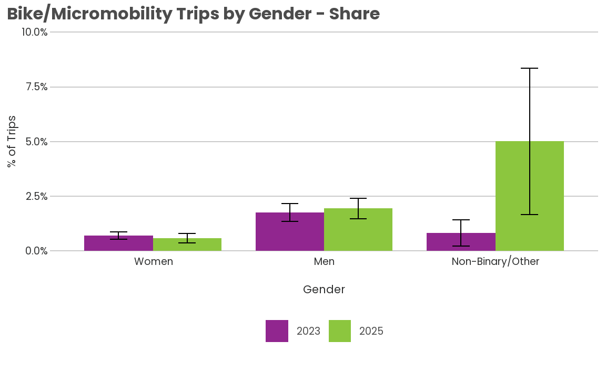
survey_year gender_group mode_class_5 count prop
<char> <fctr> <ord> <int> <num>
1: 2023 Women Bike/Micromobility 305 0.007010186
2: 2023 Men Bike/Micromobility 553 0.017570266
3: 2023 Non-Binary/Other Bike/Micromobility 23 0.008282487
4: 2025 Women Bike/Micromobility 168 0.005816544
5: 2025 Men Bike/Micromobility 262 0.019385091
6: 2025 Non-Binary/Other Bike/Micromobility 7 0.050135513
prop_moe est est_moe
<num> <num> <num>
1: 0.001751465 55435.031 13809.550
2: 0.004125313 122263.062 28827.521
3: 0.005967031 1559.733 1097.637
4: 0.002198698 48709.820 18442.209
5: 0.004782213 142828.639 35532.837
6: 0.033489332 9484.837 6459.036Trips based on Home Location
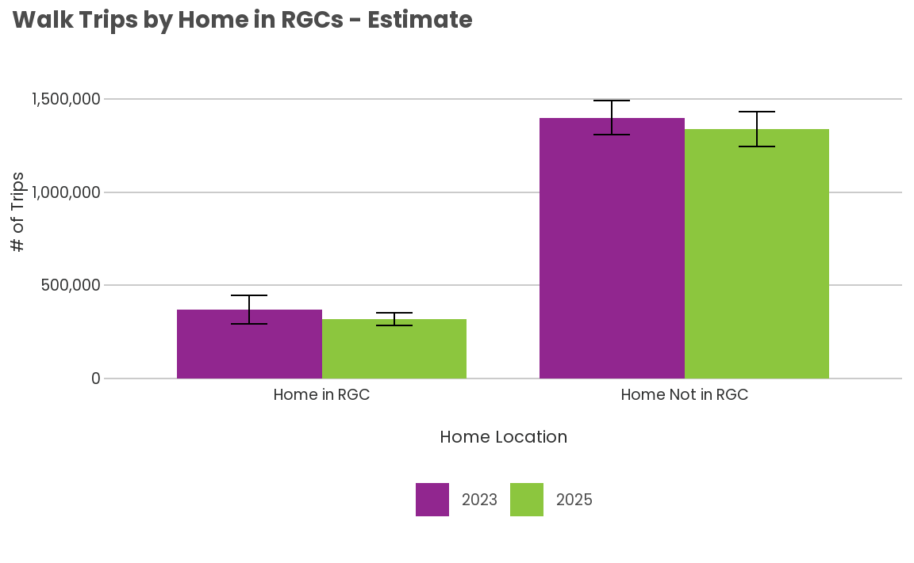
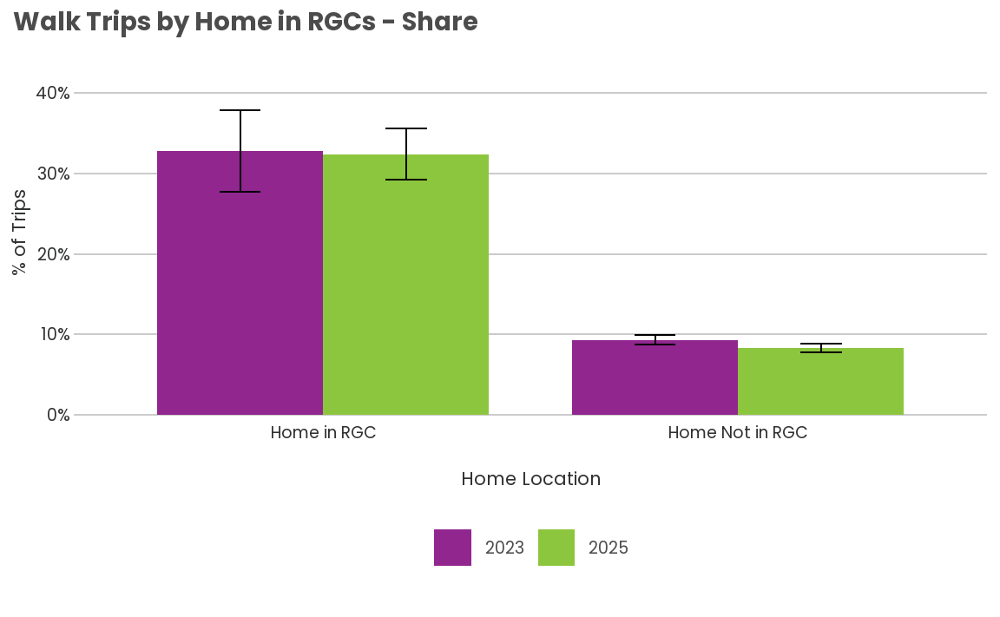
survey_year in_rgc mode_class_5 count prop prop_moe
<char> <char> <ord> <int> <num> <num>
1: 2023 Home Not in RGC Walk 4525 0.09327185 0.005997773
2: 2023 Home in RGC Walk 2398 0.32745424 0.050387398
3: 2025 Home Not in RGC Walk 2662 0.08311526 0.005735609
4: 2025 Home in RGC Walk 858 0.32366110 0.031784154
est est_moe
<num> <num>
1: 1398603.3 90704.39
2: 370320.3 77926.26
3: 1339525.9 93378.93
4: 318454.1 34847.47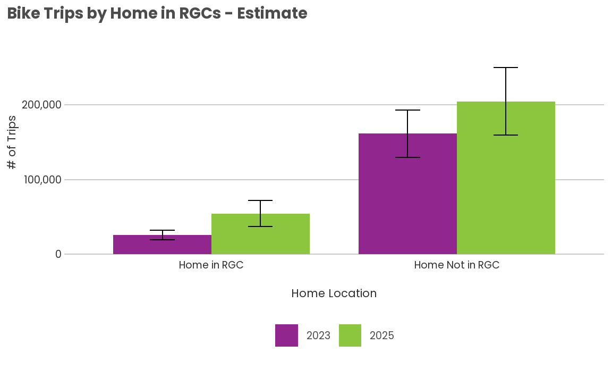
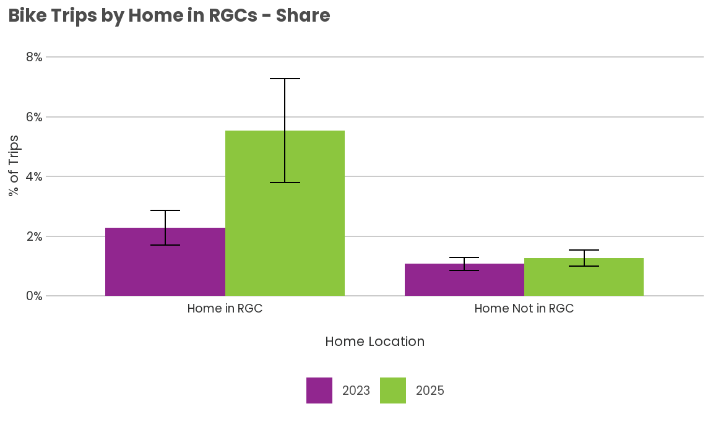
survey_year in_rgc mode_class_5 count prop prop_moe
<char> <char> <ord> <int> <num> <num>
1: 2023 Home Not in RGC Bike/Micromobility 681 0.01075884 0.002106383
2: 2023 Home in RGC Bike/Micromobility 236 0.02286526 0.005722079
3: 2025 Home Not in RGC Bike/Micromobility 353 0.01268225 0.002773003
4: 2025 Home in RGC Bike/Micromobility 124 0.05534911 0.017333083
est est_moe
<num> <num>
1: 161327.85 31633.14
2: 25858.48 6155.93
3: 204393.34 44926.06
4: 54458.66 17551.39